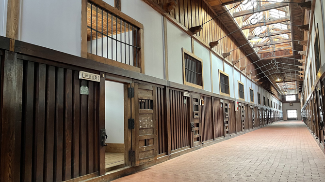
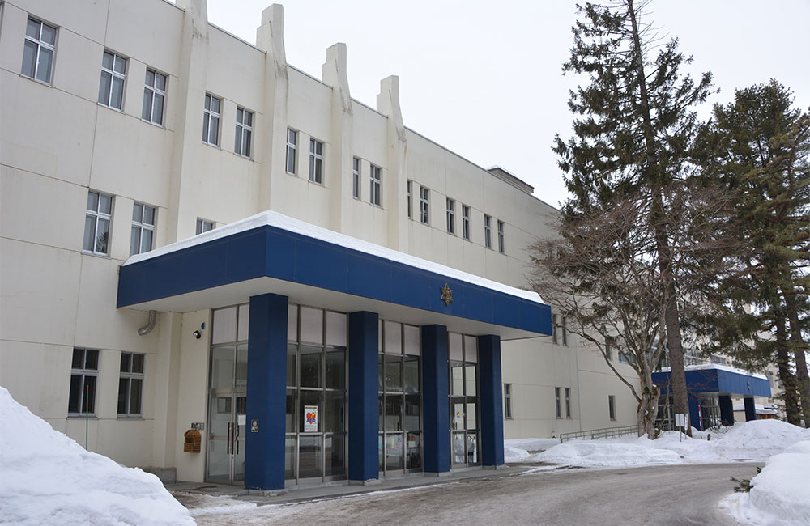

思い出に残る家族旅行におすすめ！！
撮影スポット[北海道]
目次
- ゴールデンカムイ
- 思い出のマーニー
- 銀の匙
- 北の国から
- 名探偵コナン劇場版
1. 映画（実写）「ゴールデンカムイ」ロケ地
北海道開拓の村
北海道札幌市
一つ目は、「ゴールデンカムイ」で使われた、明治から大正、昭和と各時代の建物があり、その造形美を楽しむ こたができる北海道開拓の村です。原作では数多くのシーンに建物や街並みがモデルとして登場しています。 また、52棟ある建造物のうち、なんと33棟が原作のモデルに使われているみたいです。
網走監獄博物館
北海道札幌市

二つ目は、映画で死刑囚が収監されている描写で登場した網走監獄博物館です。 ここには、重要文化財が8棟、登録有形文化財が6棟と歴史的価値が高い建築物があることで有名です。 入館料（¥1,500）を払うと監獄内を見学できます。
2. 映画（アニメ）「思い出のマーニー」
釧路湿原
北海道釧路平野
一つ目は、日本一大きい湿地帯として有名な「釧路湿原」です。 湿原の一部が日本で初めて1980年にラムサール条約で登録された場所です。また、その7年後には国立公園に登録されました。 劇中で、釧路湿原の特定の場所を表すシーンはありません。しかし、緑豊かな大湿原を川が蛇行している風景や、 ヤチボウズが生い茂る湿地帯の風景など、アニメと重なる風景が釧路湿原には多数ありその為、ロケ地の一つとして有名です。 また、夕暮れの釧路川のシーンは杏奈とマーニーがオレンジ色に染まる大河をカヌーで横切る場面にとても似ていると言われています。
藻散布沼（もりちっぷとぅ）
北海道厚岸郡
二つ目は、劇中での屋敷周辺の湿地帯のモデルと言われている浜中町の「藻散布沼（もりちっぷとぅ）」です。 ここは、小さな海跡湖で、厚岸から厚岸大橋を渡り、海岸沿いに車で約30分ほど走った場所にあります。 また、冬には白鳥の越冬地と言われておりとても有名です。 藻散布沼の先端にある船着場は、基本的に立ち入り禁止なので注意が必要です。
厚岸駅（あっけしえき）
北海道厚岸郡厚岸町
三つ目は、厚岸駅です。 ここは、杏奈の親戚の家がある「岸崎別駅」のモデルではないかと言われているところです。 厚岸駅には、釧路中心部から、根室方面に車で約1時間で行けます。 また、厚岸駅から徒歩圏内には道の駅があり、厚岸湾を眺めながら、名産である牡蠣や大人はイスキーなども楽しめます
3. アニメ「銀の匙 Silver Spoon」
帯廣農業高校
北海道帯広市

一つ目は、帯廣農業高校です。 ここは、作中で作中で勇吾が通う、「大蝦夷農業高校」のモデルとなった場所です。 敷地面積は全国第2位で110ヘクタールあります。 また、農業科学科、酪農科学科、食品科学科、農業土木工学科、森林科学科の5つの学科があり酪農業を専門的に学べる学校です。 作者の母校でもあります。
帯廣神社
北海道帯広市
2つ目は、帯廣神社です。縁結びにご利益がある場所だそうです。 ここは、漫画で登場する「大蝦夷神社」のモデルとなっています。 漫画では、勇吾と御影が初めて2人きりで行ったデートのシーンで登場しました。 作中で登場した、馬の形をした絵馬も販売されているみたいです。
帯広競馬場（ばんえい十勝）
北海道帯広市
3つ目は、帯広競馬場（ばんえい十勝）です。 ここは、ジョッキーに憧れる御影が、勇吾を誘って一緒に訪れた場所です。 ばんえい競馬とは、重さ1トンもの競走馬がそりを引きながら力やスピードを競う障害レースです。 また、敷地内には、十勝の新鮮な食材が揃うマルシェや、ミニ動物園もあり、レースがない日でもとても楽しめます。
4. ドラマ「北の国から」
中の沢小学校分校
北海道富良野市
一つ目は、中の沢小学校分校です。 ドラマでは、純と蛍の通っていた学校として使われていました。 現在は廃校になってしまいましたが、村の集会場として再活用されています。 また、ドラマの中で使われていた、「中の沢小学校分校」と書かれた看板がかけられており、 実際に使われていたも感じることができる場所です。
拾ってきた家
北海道富良野市
二つ目は、拾ってきた家です。 ここは、『北の国から2002遺言』に実際に撮影で使われた場所です。 全部で四棟の家が建てられており、不要になったバスがまるまる一台使われていたり、 ゴンドラを使った家があり、とても個性的な建物が並びます。 撮影では、不要になったバスがまるまる一台使った家を「純と結の家」として使っています。 また、実際に廃棄物を使って作られた入れ家で現代社会における様々なアイディアとメッセーが込められて作られています。
布部駅「ぬのべ」
北海道富良野市
三つ目は、布部駅「ぬのべ」です。 また、JR北海道・根室本線にある駅の一つで、放送第一回目に登場しました。 ここには、原作者直筆看板が立てられています。 物語の始まりの場所として捉えれれています。 現在は無人の駅ですが、駅の歴史は昭和2年ととても古く歴史的にも価値がある建物です。
5. 映画（アニメ）「名探偵コナン 100万ドルの五稜星」
五稜郭
北海道函館市
一つ目は、五稜郭です。 映画では、五稜郭周辺や夜桜が咲く上から見た五稜郭公園、五稜郭タワーを含んだ景観、展望室内などのシーンで使われています。 江戸末期から明治へと時代が移り変わる新時代の象徴です。 また、敷地内に設置された箱館奉行所は、戊辰（ぼしん）戦争の最後の戦いとなる箱館戦争の舞台でもあり歴史的な価値のあるあてものです。 五稜郭タワーは函館のランドマークの一つで、展望台からは特別史跡五稜郭の城郭を見下ろせるのはもちろん、 函館山や津軽海峡、横津連峰などを眺めることができます。
旧函館区公会堂
北海道函館市
二つ目は、旧函館区公会堂です。 明治43年（1910）に建てられた、洋風建築の代表的建物で、水色ベースで金の装飾がされておりとてもおしゃれです。 映画では平次の剣道大会の開催場所として使われていました。 昭和49年（1974）に国の重要文化財に指定されました。 気品漂う内部には華やかな雰囲気の家具や調度品が展示されて、バルコニーからは、函館の街が一望できます。 入館料は300円かかすが、行ってみる価値はあるところだと思います。
八幡坂
北海道函館市
二つ目は、八幡坂です。 映画では、北海道東照宮のお宝をコナンが持ちながら車とチェイスするシーンで使われていました。 ここは、函館のビュースポットとして紹介されることが多いです。 八幡坂という名前の由来は、かつてこの坂を上りきったところに函館八幡宮があったとされ、それがこの坂の由来となっています。